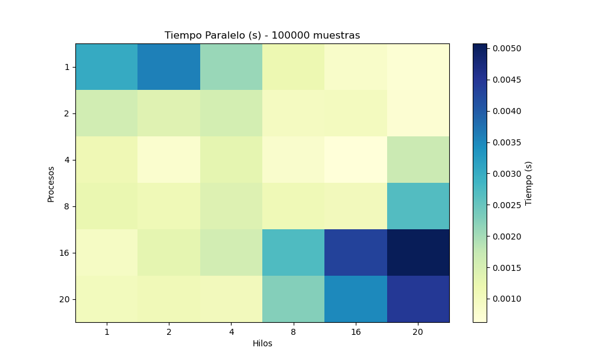
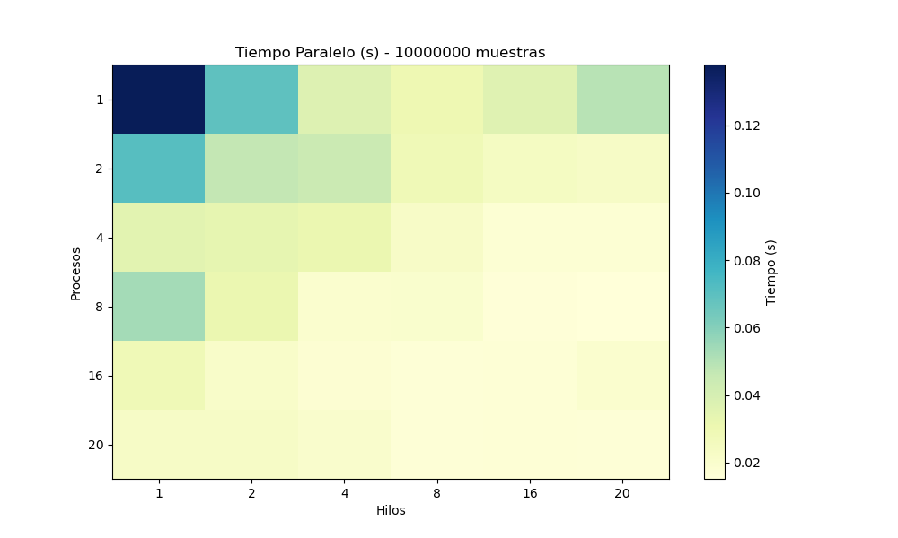

Visualización de Resultados - Montecarlo con MPI + OpenMP
Heatmap del tiempo por Procesos y Hilos
Tiempo obtenido por número de procesos y hilos, para 1000 muestras.
Tiempo obtenido por número de procesos y hilos, para 10000 muestras.

Tiempo obtenido por número de procesos y hilos, para 100000 muestras.
Tiempo obtenido por número de procesos y hilos, para 1000000 muestras.

Tiempo obtenido por número de procesos y hilos, para 10000000 muestras.